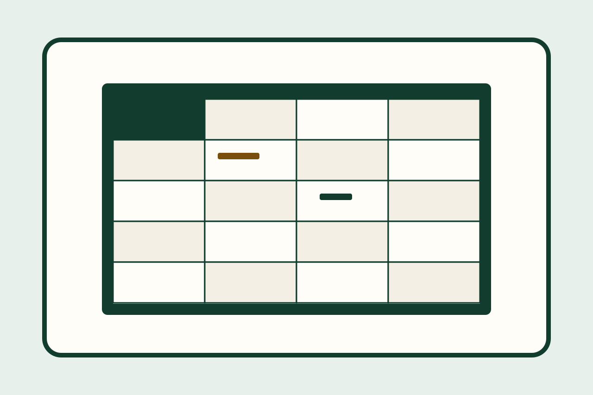

HomeCoursesMicrosoft Excel Basics (Canada)
Microsoft Excel Basics (Canada)
Your progress0% done
Syllabus
You do not need a password or a payment to open these lessons. Your place is saved on this device only.
About 20–24 hours (estimate, including practice and the exam). Each lesson’s reading time is shorter; the rest is practice.
What's included
a practice workbook, in-lesson checks, a practice task in each ready lesson, a cheat sheet you can print, a 70% final with 2 attempts, a sample certificate.
Final exam and certificate
The final exam covers all 10 lessons. The pass mark is 70%. You have 2 attempts. There is no timer. The certificate means you passed the knowledge exam. It does not mean a tutor watched you do the task. It stays locked until you pass, and it is not an accredited credential.

Lessons
- Lesson 1 — What a spreadsheet is for in everyday Canadian life
Not started
- Lists you already keep Not read yet
- Workbooks, sheets, and cells Not read yet
- What this course will teach — and what it will not Not read yet
- Worked example 1. A week of hall hours on paper vs in a sheet Not read yet
- Worked example 2. A small household list in CAD Not read yet
- Try it Not read yet
- Optional discussion (council study group) Not read yet
- Lesson 2 — Open a workbook and move around the grid
Not started
- Start a blank workbook Not read yet
- Read the window: columns, rows, and the active cell Not read yet
- Move from cell to cell Not read yet
- Worked example 1. Find one note on the Hours sheet Not read yet
- Worked example 2. Start blank, type a title, and come back to A1 Not read yet
- Try it Not read yet
- Optional discussion (council study group) Not read yet
- Lesson 3 — Enter text, numbers, and dates
Not started
- Type text and move to the next cell Not read yet
- Type numbers — and keep units in the header Not read yet
- Type a date and fix a mistake Not read yet
- Worked example 1. Type the first Hours row on the Practice sheet Not read yet
- Worked example 2. A sample date and a CAD amount Not read yet
- Try it Not read yet
- Optional discussion (council study group) Not read yet
- Lesson 4 — Format cells so a list is easy to read
Not started
- Format for readers — not for decoration Not read yet
- Borders and fill colour Not read yet
- Number formats for hours and Canadian dollars Not read yet
- Worked example 1. Make the Hours list easier to scan Not read yet
- Worked example 2. Show household amounts as money Not read yet
- Try it Not read yet
- Optional discussion (council study group) Not read yet
- Lesson 5 — Write a simple formula that starts with =
Not started
- A formula always starts with = Not read yet
- Point the formula at other cells Not read yet
- Multiply and divide before you add and subtract Not read yet
- Worked example 1. Four tiny formulas on the Practice sheet Not read yet
- Worked example 2. Add three days, then test =5+2*3 Not read yet
- Try it Not read yet
- Optional discussion (council study group) Not read yet
- Lesson 6 — AutoSum, AVERAGE, and checking that the answer makes sense
Not started
- AutoSum — a fast way to add a column or row Not read yet
- AVERAGE — typical value of a group of numbers Not read yet
- Check that the answer makes sense Not read yet
- Worked example 1. Total the sample week Not read yet
- Worked example 2. Average the sample week — including days off Not read yet
- Try it Not read yet
- Optional discussion (council study group) Not read yet
- Lesson 7 — Fill, copy, and when a cell reference should stay put
Not started
- Fill a formula into the cells beside it Not read yet
- Relative references move with the formula Not read yet
- Lock a cell with $ when it should stay put Not read yet
- Worked example 1. Double each amount down a column Not read yet
- Worked example 2. Multiply by one sample rate that must stay put Not read yet
- Try it Not read yet
- Optional discussion (council study group) Not read yet
- Lesson 8 — Sort, filter, and a simple table
Not started
- Sort a list without breaking the rows Not read yet
- Filter so only some rows show Not read yet
- Turn the list into a simple table Not read yet
- Worked example 1. Sort household amounts from largest to smallest Not read yet
- Worked example 2. Filter groceries, then make a table Not read yet
- Try it Not read yet
- Optional discussion (council study group) Not read yet
- Lesson 9 — Make a basic chart
Not started
- Choose the cells — and a simple chart type Not read yet
- Insert a recommended chart Not read yet
- Another official path: Quick Analysis Not read yet
- Worked example 1. A column chart of the sample week Not read yet
- Worked example 2. Household amounts as a simple picture Not read yet
- Try it Not read yet
- Optional discussion (council study group) Not read yet
- Lesson 10 — Save, print, and share without leaking private information
Not started
- Save on purpose — AutoRecovery is not enough Not read yet
- Preview, print, or export a PDF Not read yet
- Share less than you think you need to Not read yet
- Worked example 1. Save, then preview the Hours sheet Not read yet
- Worked example 2. Export a PDF and check it for extra details Not read yet
- Try it Not read yet
- Optional discussion (council study group) Not read yet
- Capstone Not read yet
- Final exam
Pass mark 70% (at least 21 of 30). Opens after every lesson is complete. Unlocks the sample certificate. Pass mark 70% (at least 21 of 30). Unlocks the sample certificate. There is no timer.
Milestones
- Wrote a formula
- Finished the practice file
- Passed the final
Progress could not be saved on this device. You can still read the course.